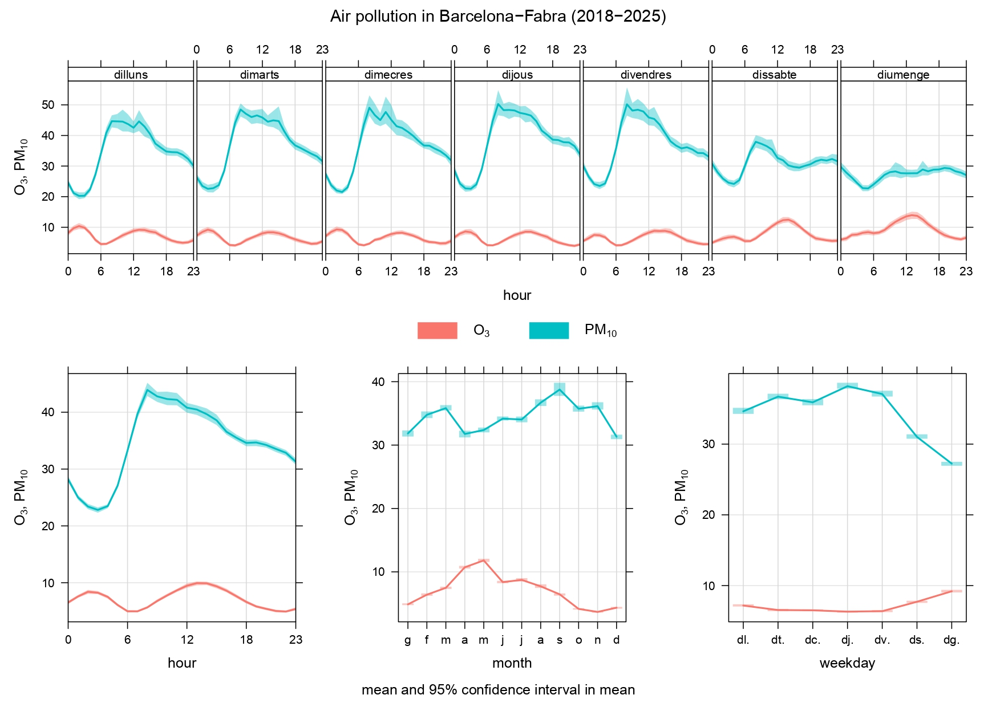

Air pollution, meteorological conditions and respiratory infections in Barcelona. A 14-year spattiotemporal analysis
This collaboratory project is produced by eight students of 11th grade (first grade baccalaureate), in the subject of coding at Pompeu Fabra High-School(Martorell, Barcelona)
The objectives of this research:
- To analize data of respiratory infections and find out possible interactions of air pollutants and meteorological variables in this health conditions.
- First thing to do is to download all data. Respiratory infection data are obtained from Information System for the Surveillance of Infections in Catalonia (SIVIC)
Data included in SIVIC: date, epidemiological week, year, region code, region name, area code, area name, primary care center code, primary care center name,
diagnosis, sex, age group, socioeconomic index, cases, population. Our data comes from Barcelona from 66 city primary care centers, and daily dat of the previous parameters from 2012-2025
Research Visualizations
1. General Pollutant Cycles (NOx, NO2, O3, PM10)

2. Ozone (O3) and Particulate Matter (PM10)

3. Nitrogen Dioxide (NO2) Heatmap Evolution